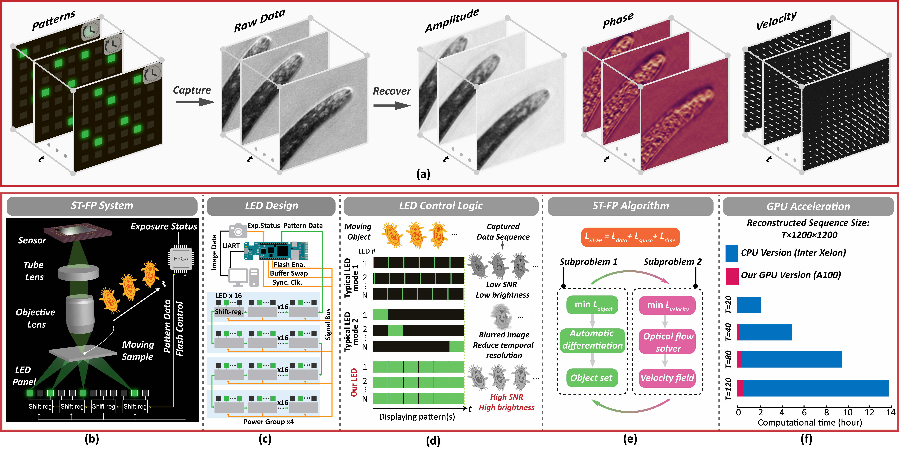

High-throughput space-time Fourier ptychography for motile microorganisms.
Ming Sun†, Kaizhang Kang†, Yogeshwar Nath Mishra, Xinge Yang,Hadi Amata, Wolfgang Heidrich
Opt. Express, 2025.

Overview of the high-performance ST-FP system.
(a) By leveraging our fast and stable illumination hardware, ST-FP captures high-speed raw data and reconstructs high-fidelity amplitude, phase, and velocity fields.
(b) Schematic of the ST-FP system, based on a shift-register-controlled LED panel for fast and stable illumination.
(c) LED module design using an array of shift-register LED drivers.
This configuration allows the system to simultaneously illuminate all LEDs based on preloaded data, which maximizes the effective brightness of each LED.
(d) Comparison of LED control logics under multiplexed illumination. Conventional sequential refreshing with short exposures, causing serious noise.
Sequential refreshing with long exposures (low fps) leads to motion blur and reduced temporal resolution. Our static shift-register control (high fps) enables high-contrast, high-SNR imaging without flicker.
(e) ST-FP reconstruction framework: the optimization problem is split into object and flow subproblems, solved alternately using automatic differentiation and optical flow solvers.
(f) GPU acceleration results: compared to the old implementation, our GPU-accelerated version dramatically reduces computational time for long-sequence reconstructions.
Abstract
High-fidelity imaging of live microorganisms is essential for understanding dynamic biological processes but remains limited by motion blur and insufficient temporal resolution.
We present a space-time Fourier ptychography (ST-FP) system optimized for high-throughput, time-resolved quantitative phase imaging of fast-evolving biological specimens.
To overcome photon budget and timing constraints, we develop a custom shift-register-based LED panel that enables direct, flicker-free control of illumination patterns,
achieving a ∼1100× increase in effective irradiance over normal LED panels. This allows for stable imaging at exposure times as short as 800 μs.
On the computational side, we formulate an auto-differentiable complex-valued reconstruction framework with GPU acceleration for the object set solution.
Our temporal regularization can improve consistency and robustness under complex motion with different illumination conditions.
The computational pipeline achieves a ∼23× speedup, reducing reconstruction time for a 120 × 1200 × 1200 sequence from 13.7 to 0.59 hours (CPU vs. GPU).
We first evaluate our optimized ST-FP through simulations of swirling motion patterns. Then, in a real experiment with a translation motion condition,
a ∼45× improvement in space-bandwidth-time product (SBP-T) over our prior ST-FP implementation is quantitatively demonstrated using a binary phase target.
We further validate the system on grayscale phase samples. We finally test our system for live imaging of vinegar eels and brine shrimp with uncontrolled motion at up to 260 Hz,
demonstrating its capability to push the dynamic upper limits of high-throughput Fourier ptychography.
The motion-aware reconstruction further enables trajectory tracking and flow field analysis of dynamic biological behaviors.
Paper
Paper [ST_FP_OE_main.pdf (20.9MB)]
Supplementary [ST_FP_OE_supp.pdf (13.8MB)]
More details [ST-FP-OE]